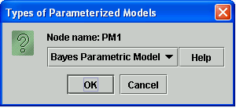
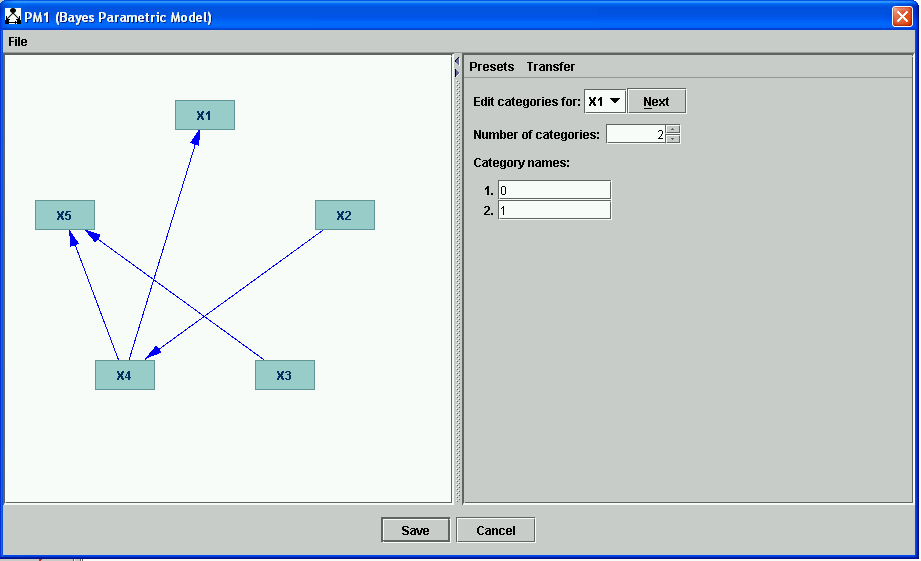

Bayes Parametric Model |
Bayes Parametric Model (Bayes PM) takes a DAG and adds to it two bits of information:
Given the graph and the additional information in (1) and (2), a Bayes net can be formally specified; it is determined what all the parameters of the Bayes net are, although no values for parameters are yet known. To specify a Bayes net up to parameter values, a Bayes Instantiated Model must be constructed, based on a Bayes PM. For details on the parameters of a Bayes IM, see Bayes Instantiated Model.
It is assumed in the current version of Tetrad that all discrete variables are nominal--that is, that the order of their categories is not important. See Defining Discrete Variables for more details.
For example, say you put the following boxes on the session, connected as follows:
For example, say you start with this DAG. (It need not be, specifically, in a Directed Acyclic Graph box; all that matters is that it contain only directed edges with no cycles.)

If you click "Save" and double click the PM1 box, you are given a choice of which model type you would like to construct. Choose "Bayes Parametric Model."

Once you click OK, the following dialog appears:

In this dialog, you can click on a variable and edit its number of nodes and category names. For instance, we can change the number of categories for X1 to 3 and set its categories to <Low, Medium, High>.

When you're finished editing categories for variables, click "Save."
The Bayes PM can take any graph as parent that contains a DAG--that is, a graph that contains only directed edges (-->) with no cycles (i.e. there is no X such that X-->...-->X in the graph). The simplest option is to construct Directed Acyclic Graph in the Graph box. (See Directed Acyclic Graph for more details.) If the parent is not a DAG, an error message will be displayed when the Bayes PM is constructed.